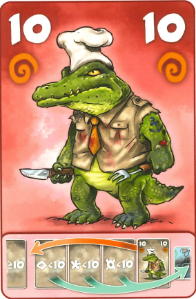

Karty, které u sebe mají symbol spirály, tak schopnost těchto karet se
provede po každém položení karty a provedení její
schopnosti. Když je v řadě více zvířat se symbolem spirály, tak opakující se
schopnosti se provedou postupně od baru ke
konci řady. Příklad: V řadě je krokodýl, krokodýl sní všechna zvířata před
sebou a má u sebe spirálu, takže jeho schopnost
se opakuje. Když do řady vstoupí klokan a přeskočí krokodýla, tak ho
krokodýl ihned sní.
